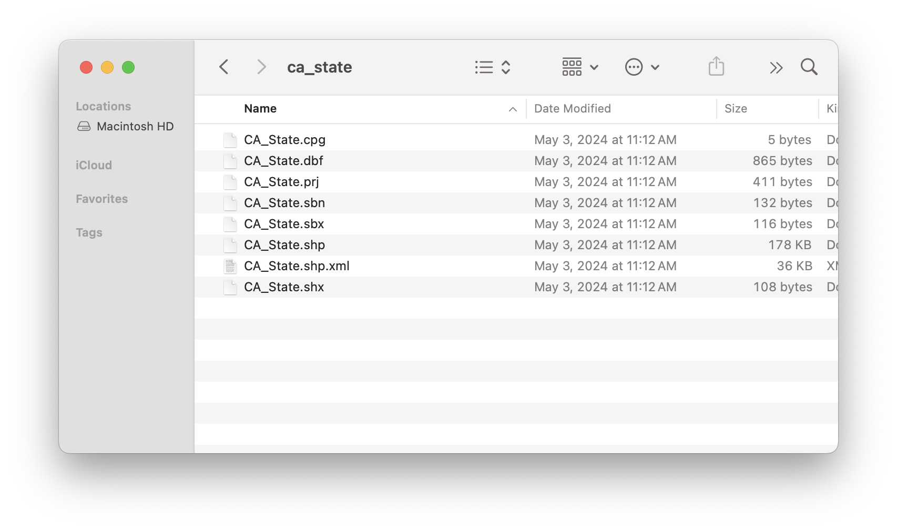
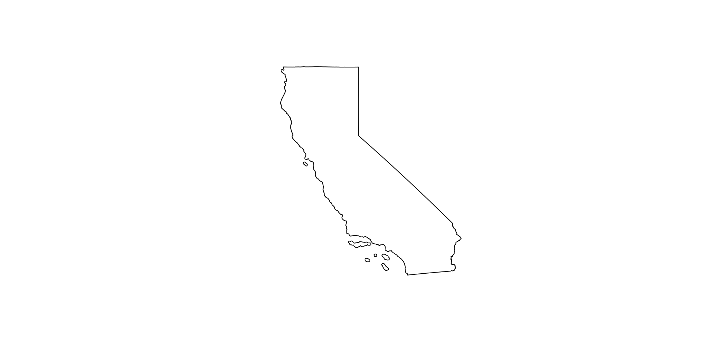
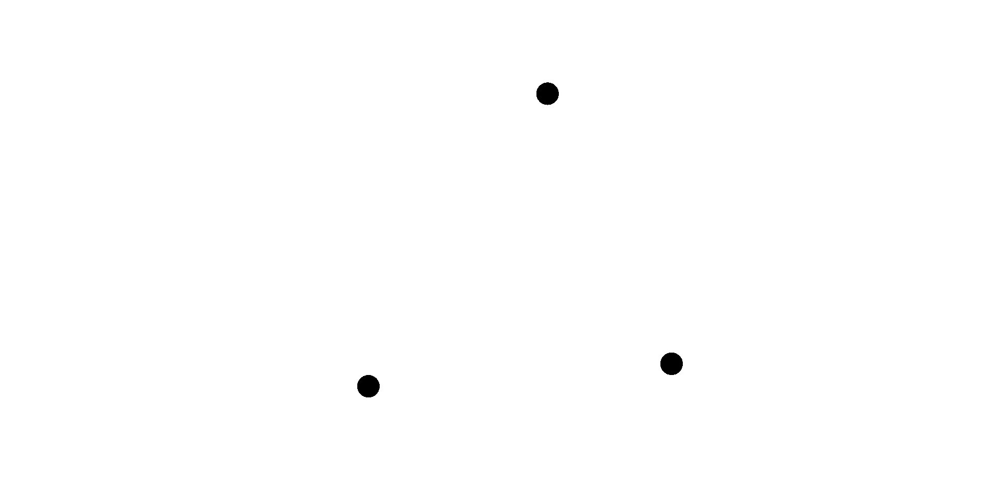
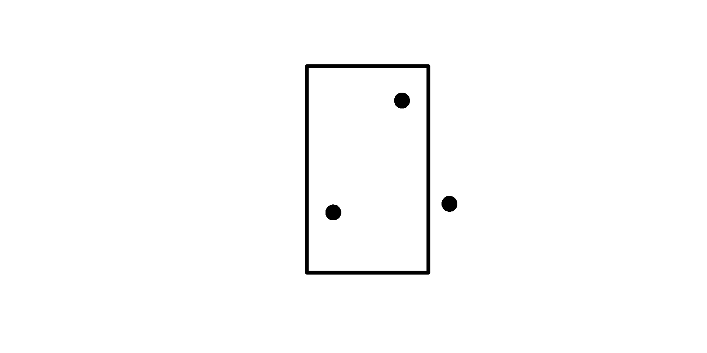
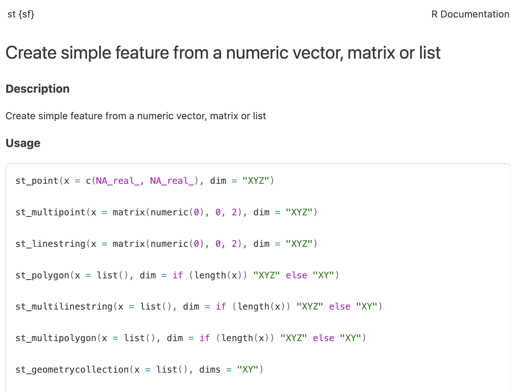
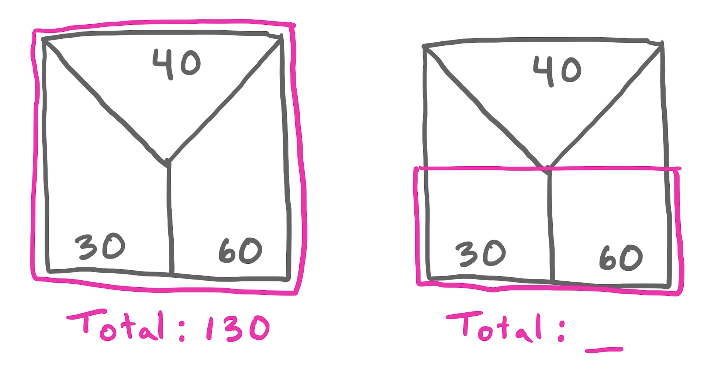
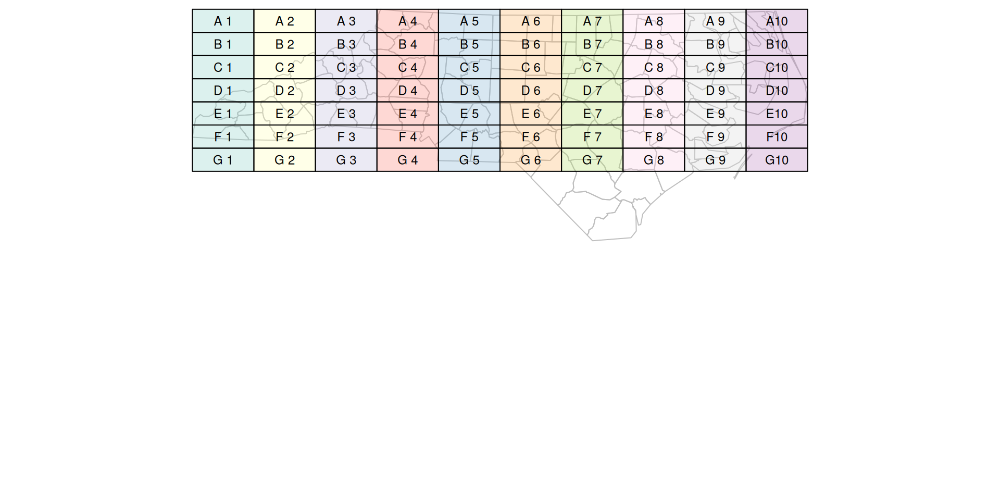
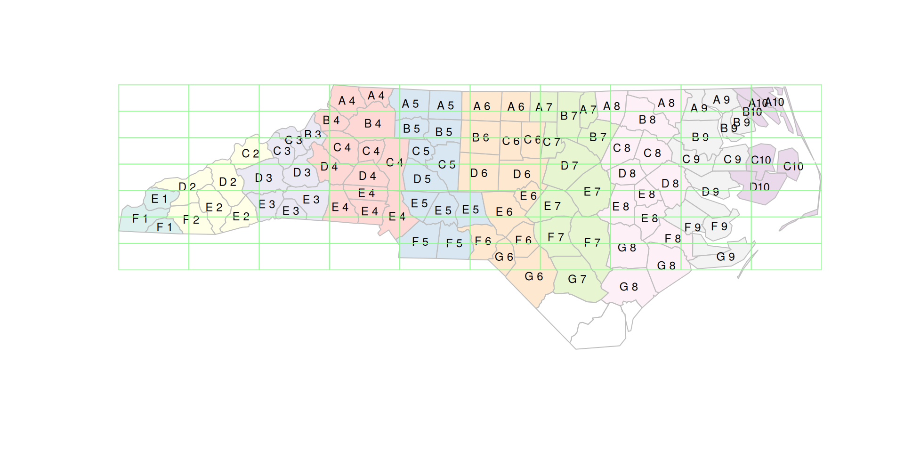

Spatial II
Computing on geometries with sf
(Last Time) Simple Feature Object:
Features: “things” or objects that have a spatial location or extent; they may be physical objects like a building, or social conventions like a political state
Feature geometry: the spatial properties (location or extent) of a feature, and can be described by a point, a point set, a polygon, etc.
Feature attributes: other non-spatial properties measured on the feature (e.g. color, name, landtype)
Agenda
- Reading in Spatial Data
- Building simple features from Scratch
- Computing on Attributes
- Computing on Geometries
- Spatial Joins
Reading in Spatial Data
Sources of sf data
- R packages / web APIs
- Shapefiles
Shapefiles
A shapefile is a bundle of files that describe spatial data. Developed for ESRI ArcView GIS system (proprietary).
Google: CA shapefile

Shapefiles
A shapefile is a bundle of files that describe spatial data. Developed for ESRI ArcView GIS system (proprietary).
Reading layer `CA_State' from data source
`/workspace/28-spatial-2/data/CA_State.shp' using driver `ESRI Shapefile'
Simple feature collection with 1 feature and 18 fields
Geometry type: MULTIPOLYGON
Dimension: XY
Bounding box: xmin: -13857270 ymin: 3832931 xmax: -12705030 ymax: 5162406
Projected CRS: Popular Visualisation CRS / MercatorSimple feature collection with 1 feature and 18 fields
Geometry type: MULTIPOLYGON
Dimension: XY
Bounding box: xmin: -13857270 ymin: 3832931 xmax: -12705030 ymax: 5162406
Projected CRS: Popular Visualisation CRS / Mercator
OBJECTID REGION DIVISION STATEFP STATENS GEOID STUSPS NAME LSAD MTFCC
1 56 4 9 06 01779778 06 CA California 00 G4000
FUNCSTAT ALAND AWATER INTPTLAT INTPTLON Shape_Leng
1 A 403467168329 20499799756 +37.1551773 -119.5434183 5258041
Shape_Le_1 Shape_Area geometry
1 5258041 671892661618 MULTIPOLYGON (((-13060109 3...Shapefiles
A shapefile is a bundle of files that describe spatial data. Developed for ESRI ArcView GIS system (proprietary).

Sources of sf data
- R packages / web APIs
- Shapefiles
- GeoJSON: Web-friendly, single file
- KLM: Web-friendly, designed for Google Earth/Maps
Building sf from scratch
Building a point set
st_: “spatial type”
sfc: “simple feature (geometry) column”
Geometry set for 3 features
Geometry type: POINT
Dimension: XY
Bounding box: xmin: 7.22 ymin: 52.18 xmax: 7.44 ymax: 52.31
Geodetic CRS: WGS 84 (CRS84)Building a point set
Simple feature collection with 3 features and 2 fields
Geometry type: POINT
Dimension: XY
Bounding box: xmin: 7.22 ymin: 52.18 xmax: 7.44 ymax: 52.31
Geodetic CRS: WGS 84 (CRS84)
elev marker geom
1 33.2 Id01 POINT (7.35 52.31)
2 52.1 Id02 POINT (7.22 52.18)
3 81.2 Id03 POINT (7.44 52.19)Quick plotting

Building a polygon
Building a polygon
Simple feature collection with 1 feature and 2 fields
Geometry type: POLYGON
Dimension: XY
Bounding box: xmin: 7.17 ymin: 52.11 xmax: 7.4 ymax: 52.35
Geodetic CRS: WGS 84 (CRS84)
elev marker geom
1 45 Id04 POLYGON ((7.17 52.11, 7.4 5...Building a polygon
Building a polygon

Computing on Attributes
Computing on Attributes
Simple feature collection with 3 features and 2 fields
Geometry type: POINT
Dimension: XY
Bounding box: xmin: 7.22 ymin: 52.18 xmax: 7.44 ymax: 52.31
Geodetic CRS: WGS 84 (CRS84)
elev marker geom
1 33.2 Id01 POINT (7.35 52.31)
2 52.1 Id02 POINT (7.22 52.18)
3 81.2 Id03 POINT (7.44 52.19)Computing on Attributes
Simple feature collection with 3 features and 2 fields
Geometry type: POINT
Dimension: XY
Bounding box: xmin: 7.22 ymin: 52.18 xmax: 7.44 ymax: 52.31
Geodetic CRS: WGS 84 (CRS84)
elev marker geom
1 81.2 Id03 POINT (7.44 52.19)
2 52.1 Id02 POINT (7.22 52.18)
3 33.2 Id01 POINT (7.35 52.31)Computing on Attributes
Simple feature collection with 1 feature and 1 field
Geometry type: MULTIPOINT
Dimension: XY
Bounding box: xmin: 7.22 ymin: 52.18 xmax: 7.44 ymax: 52.31
Geodetic CRS: WGS 84 (CRS84)
sum(elev) geom
1 166.5 MULTIPOINT ((7.35 52.31), (...
Computing on Geometries
Unary Measures
- Dimension
Simple feature collection with 3 features and 3 fields
Geometry type: POINT
Dimension: XY
Bounding box: xmin: 7.22 ymin: 52.18 xmax: 7.44 ymax: 52.31
Geodetic CRS: WGS 84 (CRS84)
elev marker geom dim
1 33.2 Id01 POINT (7.35 52.31) 0
2 52.1 Id02 POINT (7.22 52.18) 0
3 81.2 Id03 POINT (7.44 52.19) 0Unary Measures
- Dimension
Unary Measures
- Dimension
- Area
Simple feature collection with 1 feature and 3 fields
Geometry type: POLYGON
Dimension: XY
Bounding box: xmin: 7.17 ymin: 52.11 xmax: 7.4 ymax: 52.35
Geodetic CRS: WGS 84 (CRS84)
elev marker geom area
1 45 Id04 POLYGON ((7.17 52.11, 7.4 5... 418033285 [m^2]Unary Measures
- Dimension
- Area
- Length
Unary Transformers
- Centroid
Unary Transformers

Unary Transformers
Unary Transformers
- Centroid
- Jitter
Simple feature collection with 3 features and 2 fields
Geometry type: POINT
Dimension: XY
Bounding box: xmin: 7.218624 ymin: 52.17505 xmax: 7.432613 ymax: 52.33405
Geodetic CRS: WGS 84 (CRS84)
elev marker geom
1 33.2 Id01 POINT (7.359401 52.33405)
2 52.1 Id02 POINT (7.218624 52.17505)
3 81.2 Id03 POINT (7.432613 52.21221)Unary Transformers
Unary Transformers
Unary Transformers
- Centroid
- Jitter
- Buffer
Simple feature collection with 1 feature and 2 fields
Geometry type: POLYGON
Dimension: XY
Bounding box: xmin: 7.137086 ymin: 52.0894 xmax: 7.433105 ymax: 52.37073
Geodetic CRS: WGS 84 (CRS84)
elev marker geom
1 45 Id04 POLYGON ((7.429425 52.1882,...Unary Transformers
Unary Transformers
Unary Transformers
- Centroid
- Jitter
- Buffer
- and Many More
Binary Predicates
Binary Predicates
- Within
- and Many More

Spatial Joins
Joins
Table joins:
- Join records of two tables when keys match

Joins
Table joins:
- Join records of two tables when keys match
Spatial joins:
- Join records of based on a spatial predicate.

Simple feature collection with 3 features and 2 fields
Geometry type: POINT
Dimension: XY
Bounding box: xmin: 7.22 ymin: 52.18 xmax: 7.44 ymax: 52.31
Geodetic CRS: WGS 84 (CRS84)
elev marker geom
1 33.2 Id01 POINT (7.35 52.31)
2 52.1 Id02 POINT (7.22 52.18)
3 81.2 Id03 POINT (7.44 52.19)Left join within
Simple feature collection with 3 features and 4 fields
Geometry type: POINT
Dimension: XY
Bounding box: xmin: 7.22 ymin: 52.18 xmax: 7.44 ymax: 52.31
Geodetic CRS: WGS 84 (CRS84)
elev.x marker.x elev.y marker.y geom
1 33.2 Id01 45 Id04 POINT (7.35 52.31)
2 52.1 Id02 45 Id04 POINT (7.22 52.18)
3 81.2 Id03 NA <NA> POINT (7.44 52.19)Inner join within
Simple feature collection with 2 features and 4 fields
Geometry type: POINT
Dimension: XY
Bounding box: xmin: 7.22 ymin: 52.18 xmax: 7.35 ymax: 52.31
Geodetic CRS: WGS 84 (CRS84)
elev.x marker.x elev.y marker.y geom
1 33.2 Id01 45 Id04 POINT (7.35 52.31)
2 52.1 Id02 45 Id04 POINT (7.22 52.18)
Simple feature collection with 70 features and 2 fields
Geometry type: POLYGON
Dimension: XY
Bounding box: xmin: 406265 ymin: 347094.8 xmax: 3052877 ymax: 1044143
Projected CRS: NAD83 / North Carolina (ftUS)
First 10 features:
label geom col
31 G 1 POLYGON ((406265 347094.8, ... #8dd3c74d
32 G 2 POLYGON ((670926.1 347094.8... #ffffb34d
33 G 3 POLYGON ((935587.3 347094.8... #bebada4d
34 G 4 POLYGON ((1200248 347094.8,... #fb80724d
35 G 5 POLYGON ((1464910 347094.8,... #80b1d34d
36 G 6 POLYGON ((1729571 347094.8,... #fdb4624d
37 G 7 POLYGON ((1994232 347094.8,... #b3de694d
38 G 8 POLYGON ((2258893 347094.8,... #fccde54d
39 G 9 POLYGON ((2523554 347094.8,... #d9d9d94d
40 G10 POLYGON ((2788215 347094.8,... #bc80bd4dSimple feature collection with 100 features and 14 fields
Geometry type: MULTIPOLYGON
Dimension: XY
Bounding box: xmin: 406265 ymin: 48359.7 xmax: 3052877 ymax: 1044143
Projected CRS: NAD83 / North Carolina (ftUS)
# A tibble: 100 × 15
AREA PERIMETER CNTY_ CNTY_ID NAME FIPS FIPSNO CRESS_ID BIR74 SID74 NWBIR74
* <dbl> <dbl> <dbl> <dbl> <chr> <chr> <dbl> <int> <dbl> <dbl> <dbl>
1 0.114 1.44 1825 1825 Ashe 37009 37009 5 1091 1 10
2 0.061 1.23 1827 1827 Alle… 37005 37005 3 487 0 10
3 0.143 1.63 1828 1828 Surry 37171 37171 86 3188 5 208
4 0.07 2.97 1831 1831 Curr… 37053 37053 27 508 1 123
5 0.153 2.21 1832 1832 Nort… 37131 37131 66 1421 9 1066
6 0.097 1.67 1833 1833 Hert… 37091 37091 46 1452 7 954
7 0.062 1.55 1834 1834 Camd… 37029 37029 15 286 0 115
8 0.091 1.28 1835 1835 Gates 37073 37073 37 420 0 254
9 0.118 1.42 1836 1836 Warr… 37185 37185 93 968 4 748
10 0.124 1.43 1837 1837 Stok… 37169 37169 85 1612 1 160
# ℹ 90 more rows
# ℹ 4 more variables: BIR79 <dbl>, SID79 <dbl>, NWBIR79 <dbl>,
# geom <MULTIPOLYGON [US_survey_foot]>“Add to each county in NC the label and color of the grid cell that it most intersects.”
Simple feature collection with 100 features and 16 fields
Geometry type: MULTIPOLYGON
Dimension: XY
Bounding box: xmin: 406265 ymin: 48359.7 xmax: 3052877 ymax: 1044143
Projected CRS: NAD83 / North Carolina (ftUS)
# A tibble: 100 × 17
AREA PERIMETER CNTY_ CNTY_ID NAME FIPS FIPSNO CRESS_ID BIR74 SID74 NWBIR74
* <dbl> <dbl> <dbl> <dbl> <chr> <chr> <dbl> <int> <dbl> <dbl> <dbl>
1 0.114 1.44 1825 1825 Ashe 37009 37009 5 1091 1 10
2 0.061 1.23 1827 1827 Alle… 37005 37005 3 487 0 10
3 0.143 1.63 1828 1828 Surry 37171 37171 86 3188 5 208
4 0.07 2.97 1831 1831 Curr… 37053 37053 27 508 1 123
5 0.153 2.21 1832 1832 Nort… 37131 37131 66 1421 9 1066
6 0.097 1.67 1833 1833 Hert… 37091 37091 46 1452 7 954
7 0.062 1.55 1834 1834 Camd… 37029 37029 15 286 0 115
8 0.091 1.28 1835 1835 Gates 37073 37073 37 420 0 254
9 0.118 1.42 1836 1836 Warr… 37185 37185 93 968 4 748
10 0.124 1.43 1837 1837 Stok… 37169 37169 85 1612 1 160
# ℹ 90 more rows
# ℹ 6 more variables: BIR79 <dbl>, SID79 <dbl>, NWBIR79 <dbl>,
# geom <MULTIPOLYGON [US_survey_foot]>, label <chr>, col <chr>
What is the total value of the pink polygon on the right?
01:30
Spatial Interpolation
Simple feature collection with 2 features and 0 fields
Geometry type: POLYGON
Dimension: XY
Bounding box: xmin: 0 ymin: 0 xmax: 2 ymax: 1
Projected CRS: WGS 84 / Pseudo-Mercator
geometry
1 POLYGON ((0 0, 1 0, 1 1, 0 ...
2 POLYGON ((1 0, 2 0, 2 1, 1 ...Spatial Interpolation
Simple feature collection with 3 features and 1 field
Geometry type: POLYGON
Dimension: XY
Bounding box: xmin: 0 ymin: 0 xmax: 2 ymax: 1
Projected CRS: WGS 84 / Pseudo-Mercator
st_make_grid.regions_sf..n...c.3..1.. value
1 POLYGON ((0 0, 0.6666667 0,... 10
2 POLYGON ((0.6666667 0, 1.33... 20
3 POLYGON ((1.333333 0, 2 0, ... 30Spatial Interpolation
Simple feature collection with 2 features and 1 field
Attribute-geometry relationship: aggregate (1)
Geometry type: POLYGON
Dimension: XY
Bounding box: xmin: 0 ymin: 0 xmax: 2 ymax: 1
Projected CRS: WGS 84 / Pseudo-Mercator
value geometry
1 20 POLYGON ((0 0, 1 0, 1 1, 0 ...
2 40 POLYGON ((1 0, 2 0, 2 1, 1 ...